Más de una década promoviendo el arte y la cultura comunitaria
La Asociación Cultural y Educativa Reloj de Arena nació en 2013 en Pativilca como iniciativa de jóvenes artistas y gestores culturales que buscaban crear espacios gratuitos para niños y jóvenes mediante el arte comunitario.
A lo largo de más de una década ha desarrollado actividades de teatro, batucada, circo social y formación artística comunitaria, consolidándose como una organización cultural referente en la provincia de Barranca.
Punto de Cultura — Ministerio de Cultura del Perú 2023Año de fundación
Años de impacto
Talleres activos
Comunidad
Promover la educación no formal mediante el arte y la cultura, fortaleciendo valores, identidad cultural y participación ciudadana en niños, jóvenes y familias.
Ser una organización cultural referente a nivel regional y nacional que contribuya al desarrollo comunitario mediante procesos educativos, artísticos y culturales.
Espacios gratuitos de arte y expresión para niños y jóvenes
Aprende ritmos de percusión brasileña en comunidad. Formamos grupos de batucada que participan en festivales y pasacalles.
PercusiónDesarrolla tu expresión, confianza y creatividad a través del teatro comunitario y la expresión corporal.
TeatroDescubre el arte circense: malabares, zancos y acrobacias en un espacio seguro, divertido y creativo.
CircoArte visual, pintura facial y expresión creativa para los más pequeños. Un espacio lleno de color e imaginación.
Arte visualDías: Sábados y domingos
Horario: 3:30 p.m. a 7:30 p.m.
Costo: Totalmente gratuito
Presentes en la comunidad a través del arte y la cultura popular
El FIACPO es el evento más importante de la Asociación Reloj de Arena. Un festival que reúne artistas, agrupaciones culturales y comunidad en una celebración del arte popular, la identidad y la diversidad cultural.
Presentaciones teatrales creadas y protagonizadas por los propios participantes de los talleres, dirigidas a la comunidad.
Recorridos artísticos por las calles de Pativilca con batucada, zancos, teatro y arte visual que animan los espacios públicos.
Nuestro grupo de percusión comunitaria se presenta en eventos locales, festivales y celebraciones de la provincia de Barranca.
Organizamos y participamos en concursos que promueven la identidad cultural, la creatividad y el talento de niños y jóvenes.
Espacios de integración familiar donde el arte y la cultura unen a niños, jóvenes y adultos en experiencias compartidas.
Llevamos el arte a plazas, parques y calles de Pativilca y Barranca para acercar la cultura a toda la comunidad.
Momentos que capturan el arte, la cultura y la comunidad
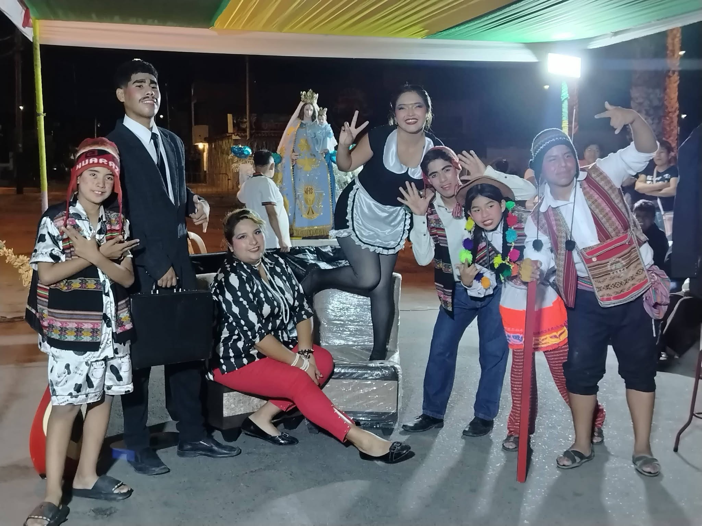
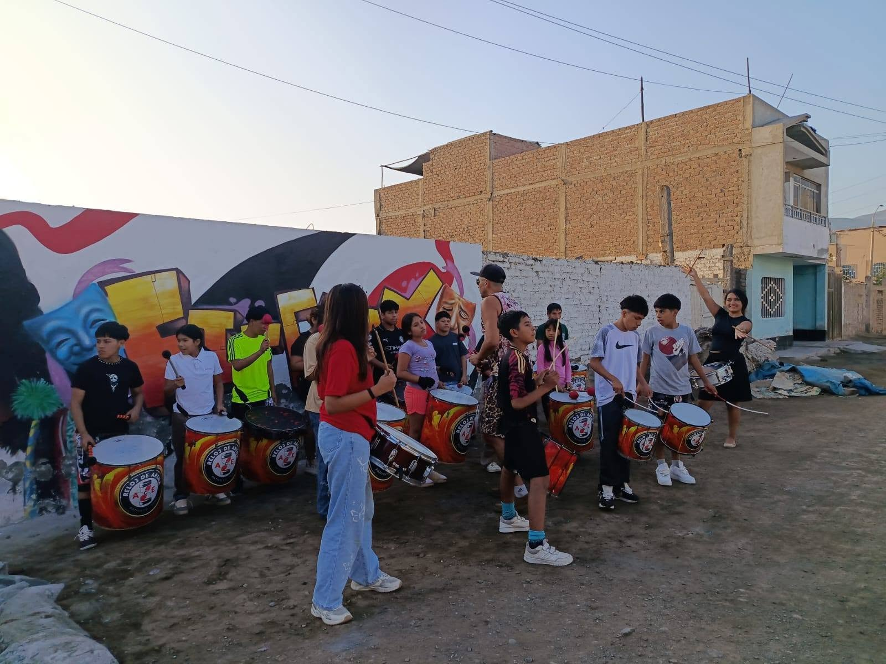
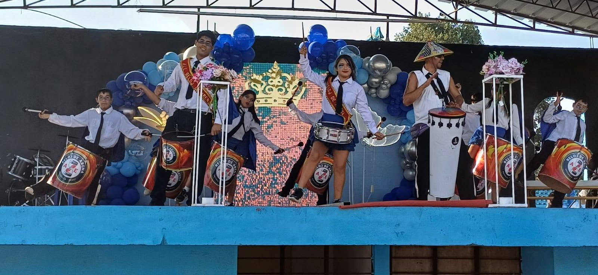
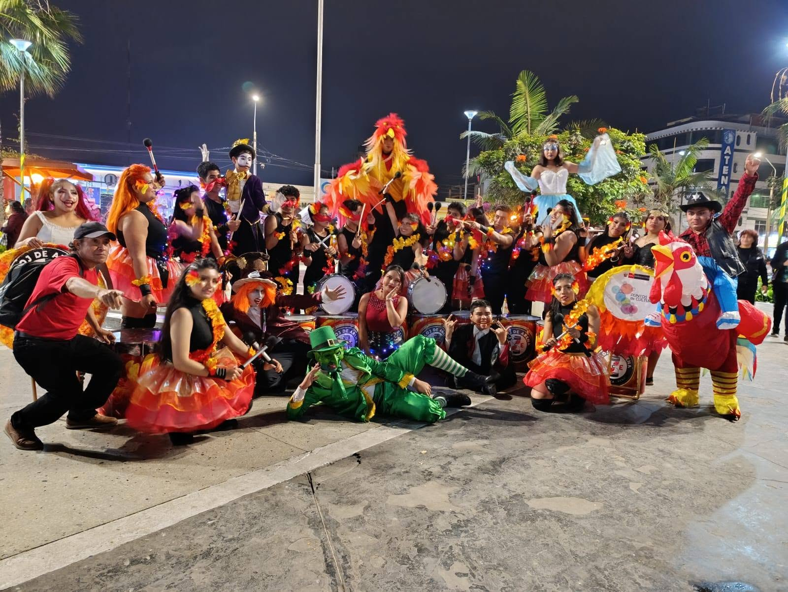
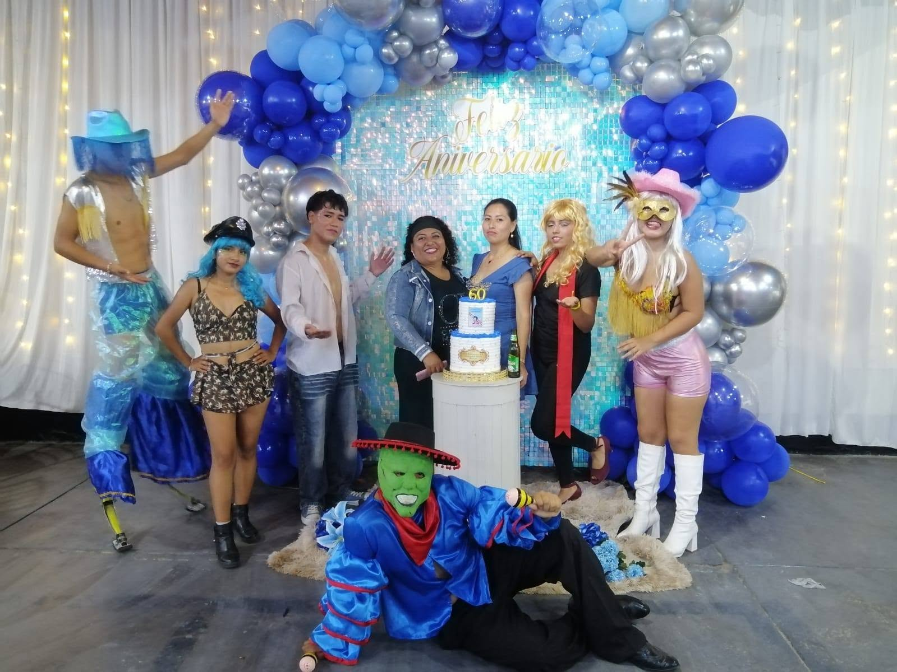
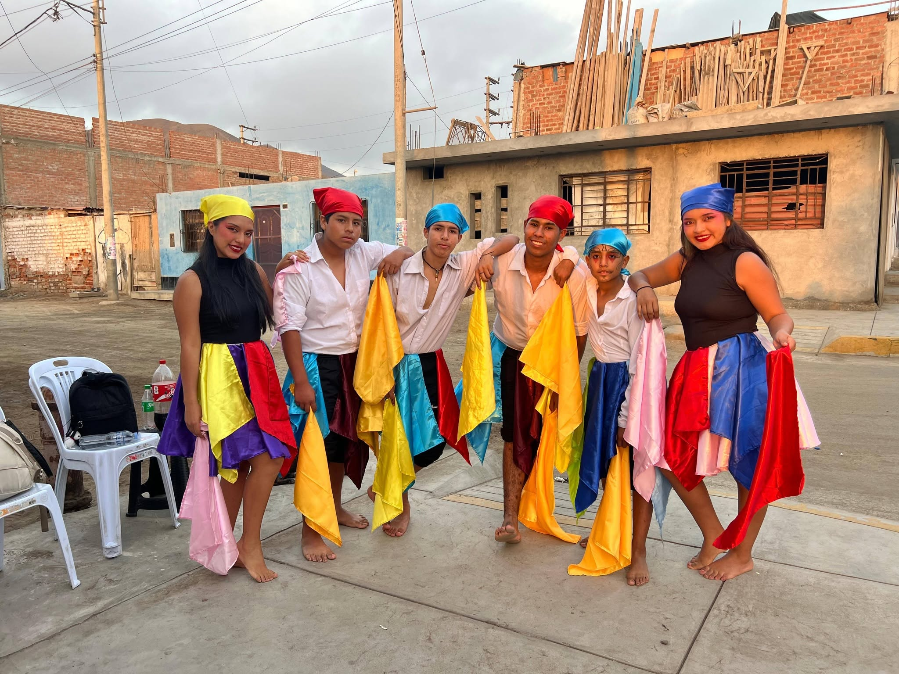
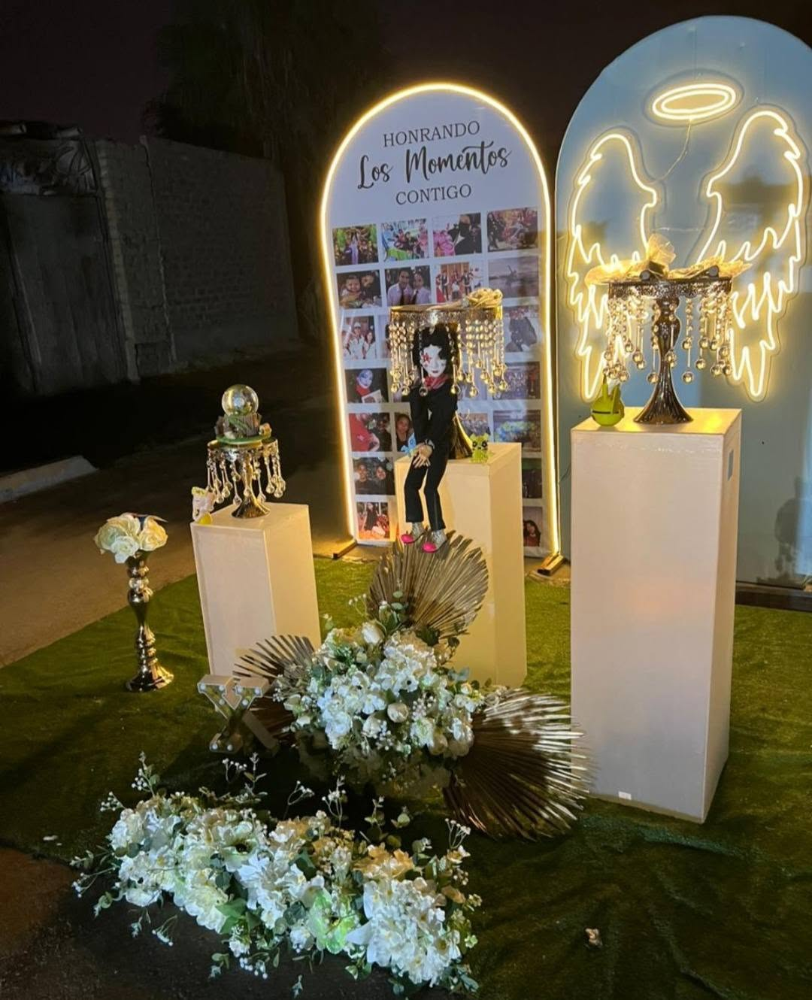
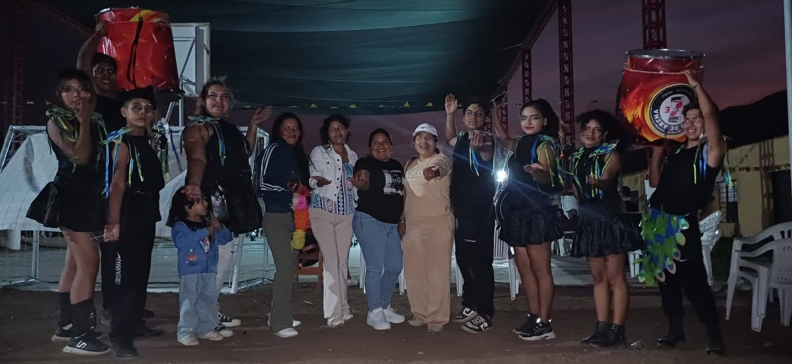
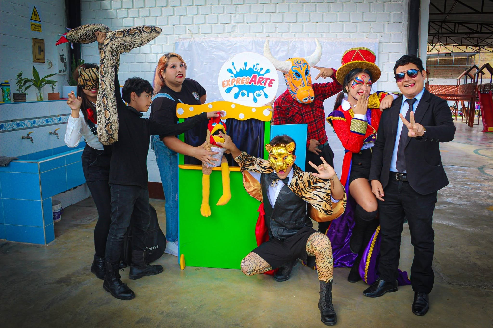
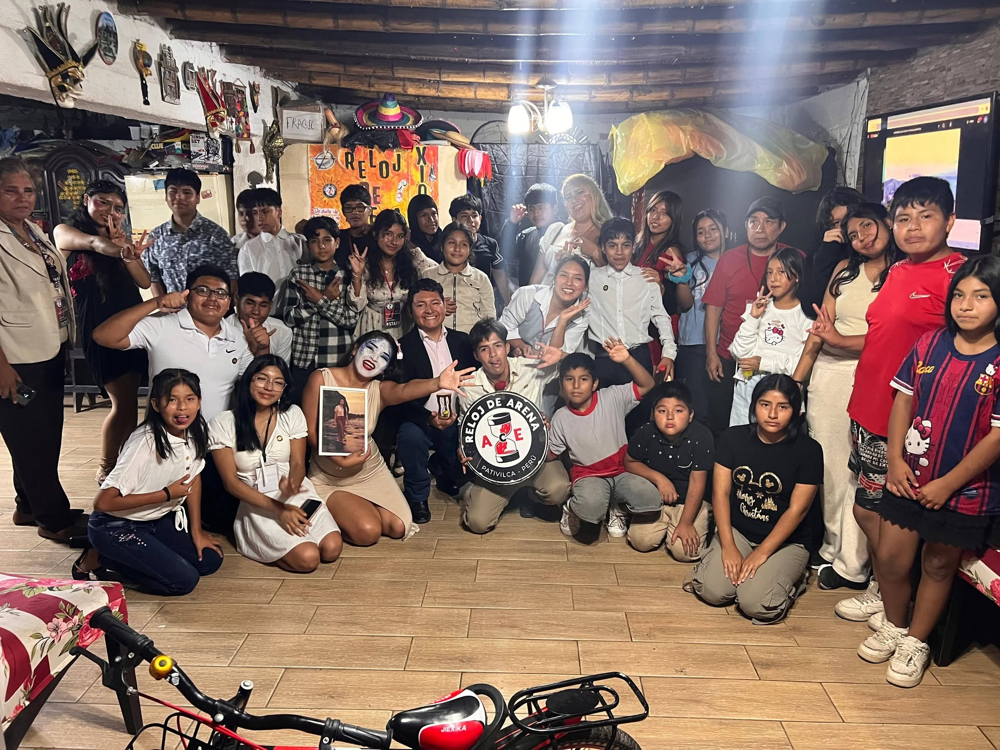
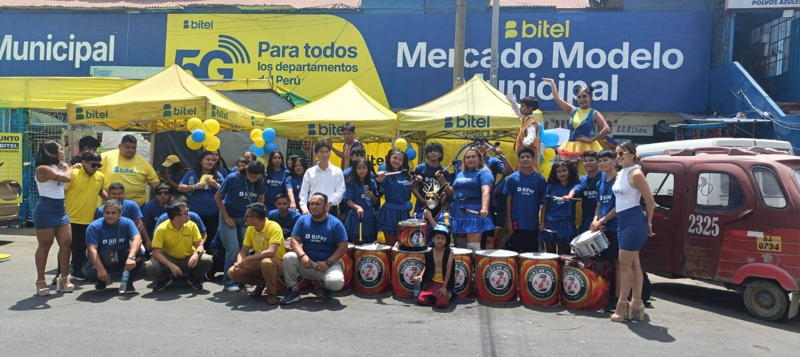
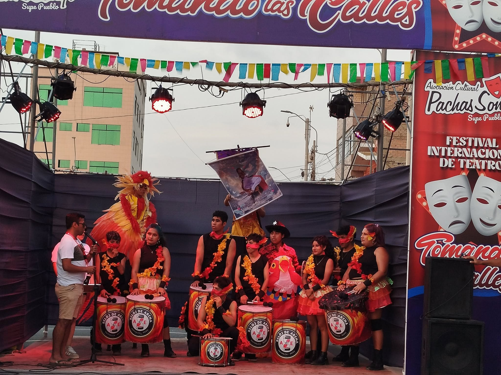
Personas comprometidas con el arte y la comunidad
Lideran la gestión institucional y estratégica de la asociación, garantizando el cumplimiento de la misión y visión.
Planifican y ejecutan los proyectos culturales y educativos, articulando recursos y equipos de trabajo.
Artistas y educadores que conducen los talleres de batucada, teatro, circo y artes visuales cada fin de semana.
Jóvenes que fueron parte de los talleres y hoy contribuyen como voluntarios, multiplicando el impacto comunitario.
Súmate como voluntario, tallerista o colaborador. Juntos construimos comunidad a través del arte.
Contáctanos